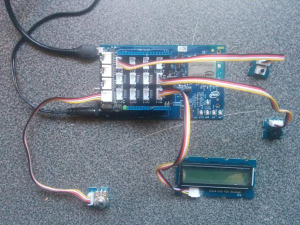

Exercise: Smart Alarm Clock
Create a prototype of a smart alarm clock using a buzzer (Digital), a button (Digital), a rotary angle (Analog), and an LCD display (I2C) with a web server running on the Intel Edison. Set the alarm time using a web page served directly from the Edison itself, using your laptop or mobile phone. When the alarm goes off, the buzzer sounds and the LCD display indicates it’s time to get up. The rotary dial can be used to adjust the brightness of the display.
-
Connect Grove Buzzer to digital pin D5 of the Grove Base Shield.
Connect Grove Button to digital pin D4.
Connect Grove LCD display to any I2C pin.
Connect Grove Rotary Angle to analog pin A0.

-
To start off, write some code for the hardware in main.js:
Create and test functions to make the LCD display blink red, and to stop blinking.
Create and test functions to start the buzzer buzzing, and to stop the buzzer.
Changes in rotary angle should change the brightness of LCD display.
-
Now, add your server side code in main.js:
Create a web server on the Intel Edison using express in NodeJS.
Remember to edit your package.json to include the express, moment, and superagent npm modules.
-
Create a new index.html file and write your front end code in there.
- Create a simple HTML widget to set the time for the alarm clock.
-
Finally, hook everything up together:
When it’s proper time for alarm to start, LCD display should blink to red and buzzer should start buzzing.
When user presses the button: alarm must turn off, LCD must stop blinking, and buzzer should stop buzzing.
References
- https://github.com/intel-iot-devkit/upm/blob/master/examples/javascript/groverotary.js
- http://www.seeedstudio.com/wiki/Grove-Rotary_Angle_Sensor
- https://github.com/intel-iot-devkit/upm/blob/master/examples/javascript/grovebutton.js
- http://www.seeedstudio.com/wiki/Grove-Button
- https://github.com/intel-iot-devkit/upm/blob/master/examples/javascript/buzzer.js
- http://www.seeedstudio.com/wiki/Grove-Buzzer
- https://github.com/intel-iot-devkit/upm/blob/master/examples/javascript/rgb-lcd.js
- http://www.seeedstudio.com/wiki/Grove-LCD_RGB_Backlight
- http://expressjs.com/starter/hello-world.html
- https://github.com/visionmedia/superagent
- http://momentjs.com/docs/
You should now see have a prototype of a smart alarm clock.